الطبيب
بوابة الطبيب
أدِر مواعيد عيادتك ومرضى الكشف بدون موعد والسجلات الطبية والروشتات، وسجّل مرضاك في برامج دعم المرضى، كل ذلك من بوابة واحدة.
للأطباء، وللمساعدين الذين يعملون في عياداتهم.
اضغط على الصورة لتكبيرها.
قبل أن تبدأ
بوابة الطبيب صفحة ويب تعمل على الكمبيوتر أو التابلت أو الهاتف.
- بيانات الدخول. تسجّل الدخول برقم هاتفك وكلمة المرور الخاصة بك.
- المساعدون. يستخدم المساعد البوابة نفسها برقم هاتفه وكلمة مرور تحددها أنت له، ولا يرى إلا المهام التي تسمح له بها (انظر قسم المساعدون أدناه).
- جزءان في قائمة واحدة. تضم القائمة الجانبية أعمال عيادتك اليومية — المواعيد والكشف بدون موعد والمرضى والعيادات والروشتات — وصفحات برامج دعم المرضى: رصيد الكوبونات وصرف كوبون والحالات.
تسجيل الدخول
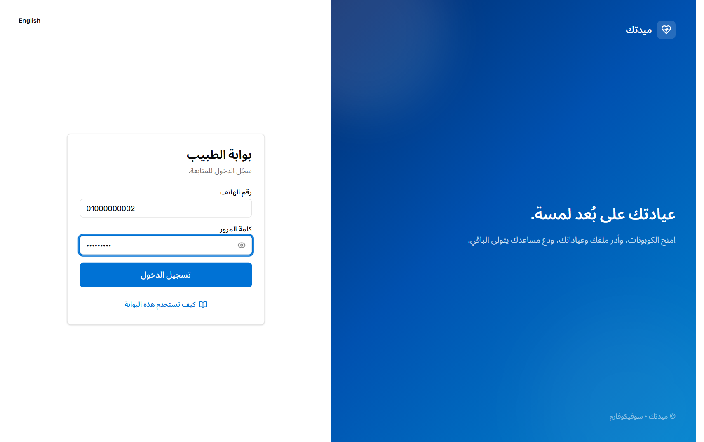
- 1رقم الهاتف — رقم موبايلك.
- 2كلمة المرور — كلمة المرور الخاصة بك.
- 3اضغط على العين لإظهار كلمة المرور أثناء كتابتها.
- 4تسجيل الدخول يفتح البوابة.
- 5بدّل لغة الشاشة بين العربية وEnglish في أي وقت.
- 6كيف تستخدم هذه البوابة يفتح هذا الدليل.
التنقل في البوابة
تُفتح البوابة على صفحة رصيد الكوبونات، والقائمة ظاهرة دائمًا على جانب الشاشة.
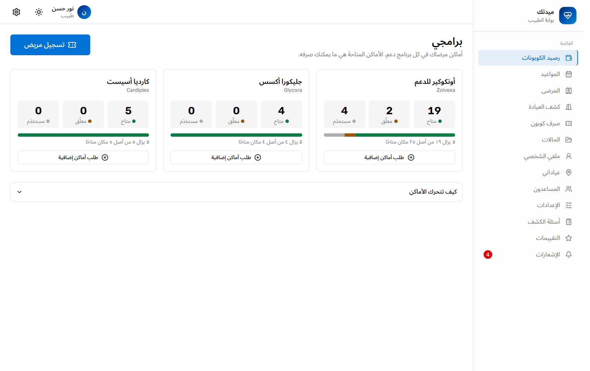
- 1رصيد الكوبونات — أماكنك المتاحة في كل برنامج دعم.
- 2المواعيد — حجوزاتك، ومنها يبدأ يومك عادةً.
- 3صرف كوبون — تسجيل مريض في برنامج دعم.
- 4الإشعارات — تنبيهاتك، والرقم الأحمر يعرض عدد غير المقروء منها.
- 5اسمك ودورك (طبيب أو مساعد).
- 6التبديل بين الوضع الفاتح والوضع الداكن.
- 7قائمة الإعدادات: اللغة (العربية أو English) ودليل الاستخدام (يفتح هذا الدليل في علامة تبويب جديدة) وتسجيل الخروج. سجّل الخروج دائمًا على الكمبيوتر المشترك.
| القائمة | الغرض منها |
|---|---|
| رصيد الكوبونات | أماكن المرضى المتاحة لك في كل برنامج دعم. |
| المواعيد | طلبات الحجز وزيارات اليوم والتقويم. |
| المرضى | كل من حجز معك أو زار عيادتك، مع سجلاته. |
| كشف العيادة | مرضى اليوم الذين حضروا بدون موعد. |
| صرف كوبون | تسجيل مريض في برنامج دعم. |
| الحالات | المرضى الذين سجّلتهم وما وصلت إليه حالة كل منهم. |
| ملفي الشخصي | ما يراه المرضى عنك، وبياناتك الموثقة. |
| عياداتي | عياداتك ومواعيد عملها وأيام إغلاقها وأسعار الكشف. |
| المساعدون | من يساعدونك في العيادة (للطبيب فقط). |
| الإعدادات | قواعد الحجز وترويسة الروشتة. |
| أسئلة الكشف | ما يجيب عنه المريض عند الحجز. |
| التقييمات | آراء المرضى بعد زيارتهم. |
| الإشعارات | كل تنبيهاتك، الأحدث أولًا. |
المواعيد
استعراض المواعيد
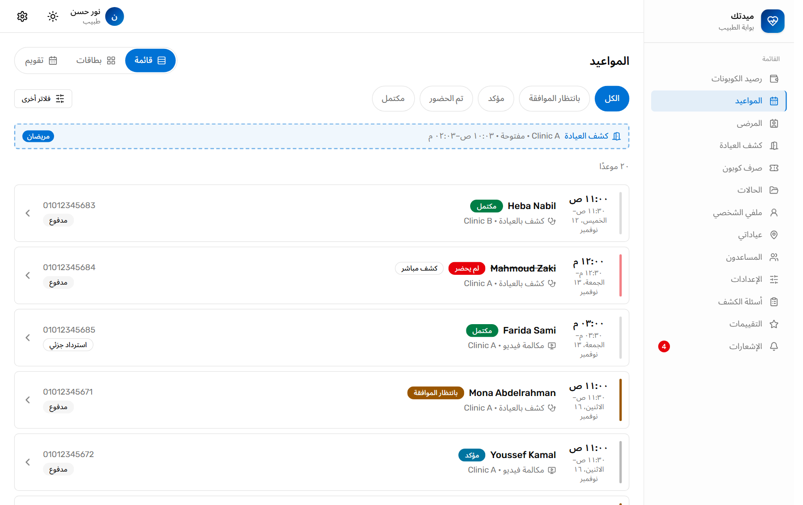
- 1اختر طريقة العرض: قائمة أو بطاقات أو تقويم.
- 2اعرض مرحلة واحدة فقط: الكل أو بانتظار الموافقة أو مؤكد أو تم الحضور أو مكتمل.
- 3فلاتر أخرى — ابحث باسم المريض، أو صفِّ حسب التاريخ أو العيادة أو نوع الكشف أو طريقة الحجز أو الدفع.
- 4جلسة الكشف بدون موعد لليوم، وعدد المرضى الحاضرين. اضغط عليها لفتح صفحة كشف العيادة.
- 5مرحلة كل موعد. بانتظار الموافقة تعني أن المريض ينتظر ردك.
- 6علامة برنامج دعم (PSP) تميّز الحجز المرتبط ببرنامج دعم، مع اسم البرنامج.
اضغط على أي موعد لفتحه.
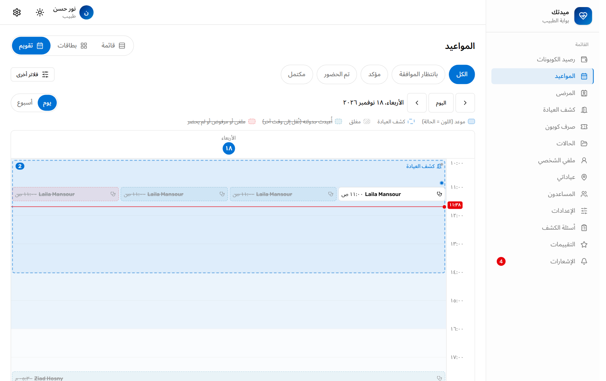
- 1انتقل إلى اليوم السابق أو التالي، أو عُد إلى اليوم.
- 2يوم أو أسبوع.
- 3دليل الألوان: لون الموعد يدل على مرحلته، والمواعيد المشطوبة هي التي نُقلت أو أُلغيت أو رُفضت أو لم يحضرها المريض.
- 4جلسة الكشف بدون موعد هي المربع المحدد بخط متقطع، وعليه عدد المرضى.
- 5الخط الأحمر هو الوقت الحالي.
الرد على طلب حجز
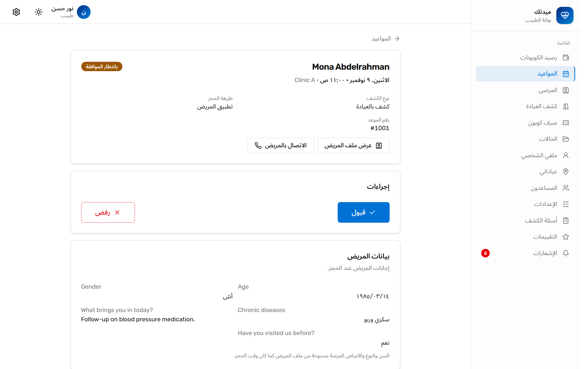
- 1بانتظار الموافقة — المريض ينتظر ردك.
- 2عرض ملف المريض يفتح سجل المريض.
- 3الاتصال بالمريض يتصل برقم هاتفه.
- 4قبول يؤكد الموعد.
- 5رفض يعتذر عن الموعد، ويلزمك كتابة السبب.
- 6بيانات المريض — الإجابات التي أرسلها المريض عند الحجز.
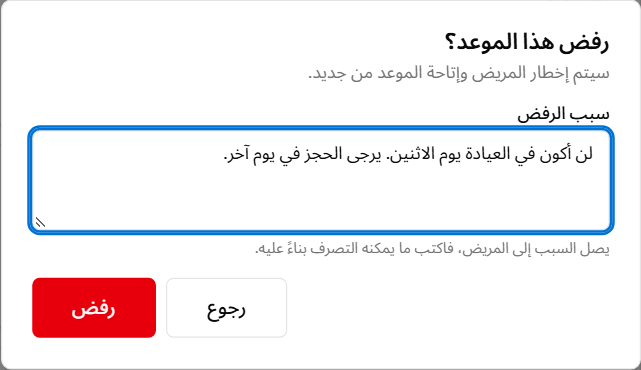
- 1رفض هذا الموعد؟ يُبلَّغ المريض ويُتاح الموعد من جديد.
- 2سبب الرفض — اكتب سببًا يستطيع المريض أن يتصرف بناءً عليه.
- 3رجوع يغلق النافذة دون أي تغيير.
- 4رفض يرسل الرفض.
متابعة الموعد حتى نهايته
تتغير الأزرار في بطاقة إجراءات بحسب مرحلة الموعد، ولا يظهر لك إلا ما يناسب المرحلة الحالية.
| المرحلة | الأزرار التي تظهر |
|---|---|
| بانتظار الموافقة | قبول ورفض |
| مؤكد | تسجيل الحضور عند وصول المريض، وإلغاء الموعد، وتسجيل عدم حضور |
| تم الحضور | بدء الكشف، وتسجيل عدم حضور إذا غادر المريض قبل الكشف |
| داخل الكشف | إنهاء الكشف |
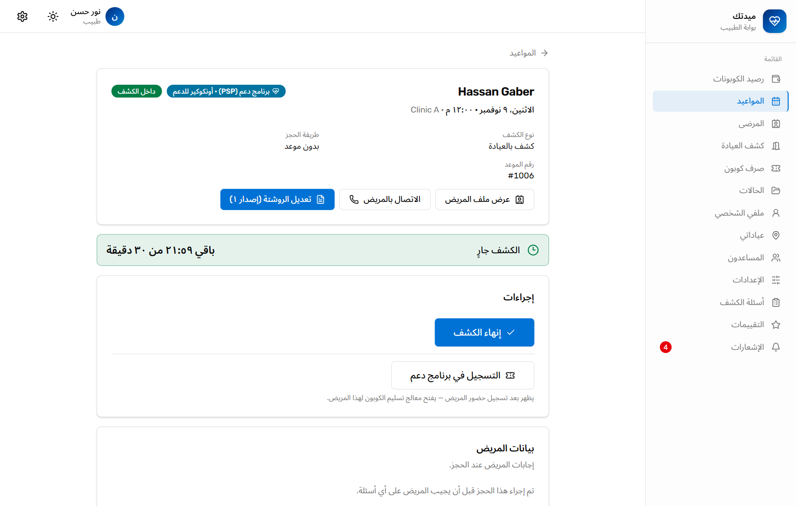
- 1هذا الحجز مرتبط ببرنامج دعم.
- 2العد التنازلي للكشف: الوقت المتبقي من مدة الموعد.
- 3كتابة روشتة (أو تعديل الروشتة إذا كانت موجودة) — انظر قسم الروشتات أدناه.
- 4إنهاء الكشف يُنهي الزيارة.
- 5التسجيل في برنامج دعم — يظهر بعد تسجيل حضور المريض، ويفتح تسجيل هذا المريض في برنامج.
كشف العيادة (المرضى بدون موعد)
الجلسة فترة كشف للمرضى الذين يحضرون بدون موعد، وتسجّل كل مريض برقم هاتفه عند وصوله.
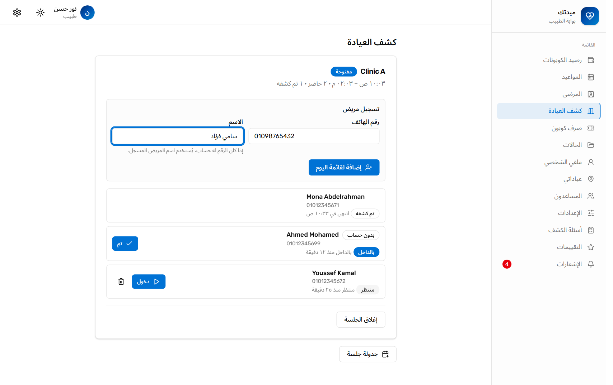
- 1العيادة والجلسة. مفتوحة تعني أن الجلسة جارية، وتحتها عدد الحاضرين وعدد من تم كشفهم.
- 2رقم الهاتف — رقم موبايل المريض.
- 3الاسم — إذا كان الرقم له حساب، يُستخدم اسم المريض المسجّل.
- 4إضافة لقائمة اليوم يضيف المريض إلى الدور.
- 5دخول يُدخل المريض المنتظر إلى غرفة الكشف.
- 6تم يُنهي زيارة المريض الموجود في الغرفة.
- 7إغلاق الجلسة يُنهي فترة الكشف.
- يظهر بجانب كل مريض منتظر أو بالداخل أو تم كشفه، والمدة.
- سلة المهملات بجانب المريض المنتظر تزيله من القائمة.
- بدون حساب تعني أن الرقم ليس له حساب في ميدتك بعد، وتنضم الزيارة إلى سجله تلقائيًا إذا سجّل لاحقًا.
- أثناء وجود المريض في الغرفة، يفتح زر روشتة روشتته.
- جدولة جلسة تحدد فترة كشف ليوم آخر، وتظهر في التقويم.
- إذا لم تُفتح جلسة اليوم، تعرض الصفحة افتح جلسة اليوم: حدّد الوقت واضغط فتح الجلسة.
المرضى
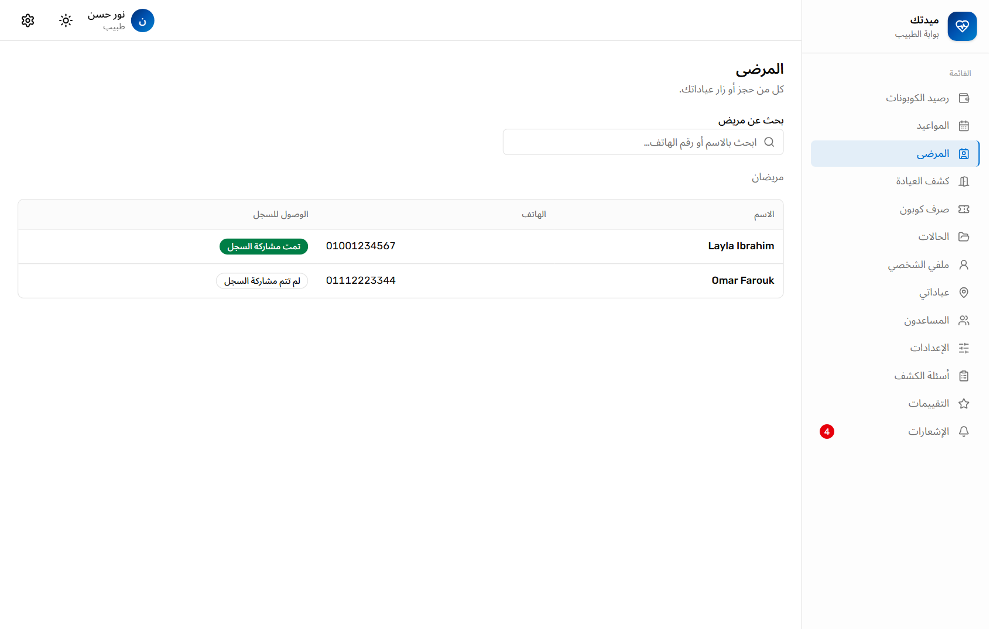
- 1بحث عن مريض بالاسم أو برقم الهاتف.
- 2اضغط على المريض لفتح سجله.
- 3تمت مشاركة السجل — سمح لك المريض بالاطلاع على تاريخه الطبي.
- 4لم تتم مشاركة السجل — ترى بياناته الأساسية ومواعيده معك فقط، ويمكن للمريض منحك الوصول من تطبيقه.
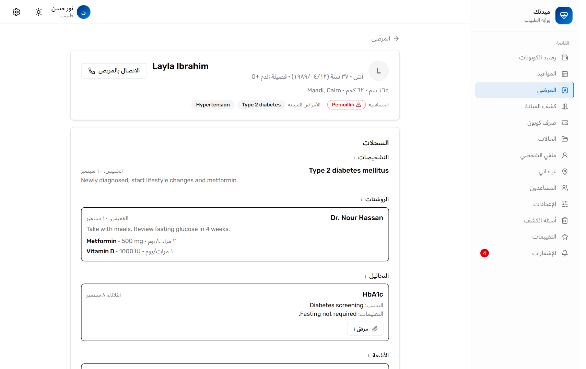
- 1الاسم والسن والنوع وفصيلة الدم والطول والوزن والمدينة.
- 2الحساسية (باللون الأحمر) والأمراض المزمنة.
- 3الاتصال بالمريض.
- 4السجلات — التشخيصات والروشتات والتحاليل والأشعة والمستندات والقياسات.
- 5تعرض كل روشتة الطبيب والتاريخ والتعليمات والأدوية.
وفي الأسفل يعرض قسم المواعيد معك كل زيارات المريض، واضغط على أي منها لفتحها.
الروشتات
كتابة الروشتة للطبيب وحده. افتحها من الموعد (كتابة روشتة) بعد تسجيل حضور المريض، أو من زر روشتة في قائمة كشف العيادة.
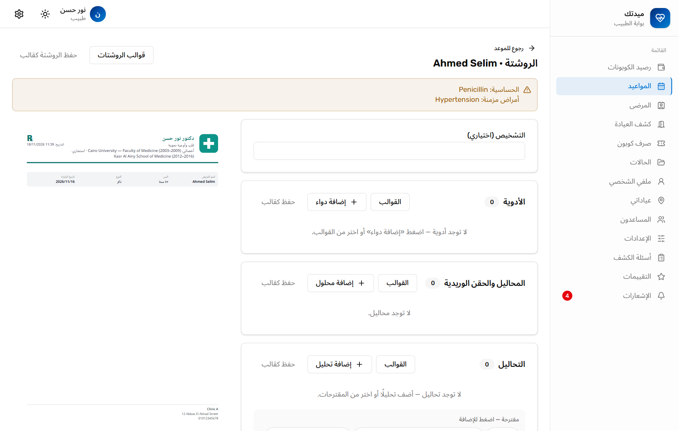
- 1الروشتة لهذا المريض ولهذه الزيارة.
- 2حساسية المريض وأمراضه المزمنة، للتذكير.
- 3التشخيص (اختياري).
- 4إضافة دواء. وتعمل الأقسام الأخرى بالطريقة نفسها: المحاليل والحقن الوريدية والتحاليل والأشعة.
- 5قوالب الروشتات — أعد استخدام روشتة كاملة حفظتها من قبل. ولكل قسم أيضًا زر القوالب وزر حفظ كقالب.
- 6معاينة حية للروشتة المطبوعة على ترويستك.
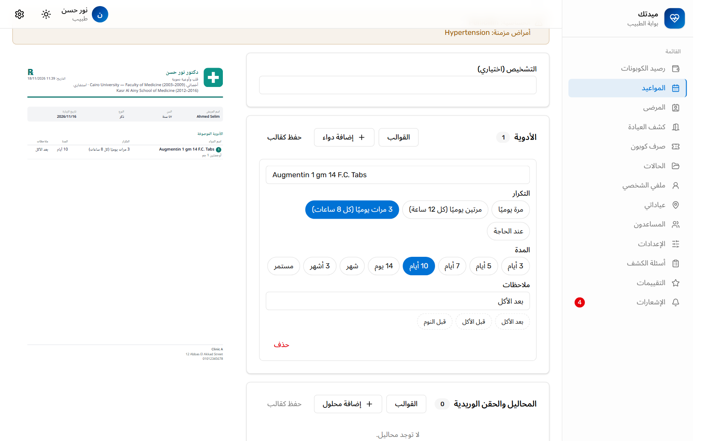
- 1اكتب أول حروف الدواء واختره من القائمة.
- 2التكرار — اضغط على اختيار واحد.
- 3المدة — اضغط على اختيار واحد.
- 4ملاحظات — اضغط بعد الأكل أو قبل الأكل أو قبل النوم، أو اكتب ملاحظتك.
- 5تتحدث المعاينة أثناء الكتابة.
تعرض أقسام التحاليل والأشعة اقتراحات بعنوان مقترحة — اضغط للإضافة. وفي الأسفل أضف تعليمات عامة للمريض وتاريخ المتابعة (باختيار مدة جاهزة أو تاريخ). ثم اضغط حفظ الروشتة.
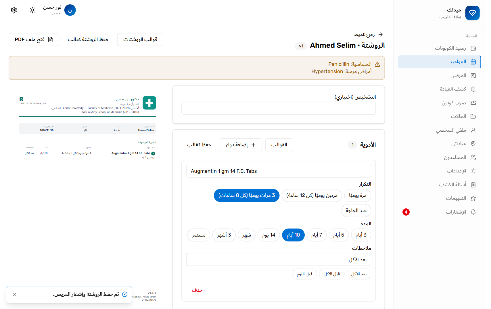
- 1رقم الإصدار. كل حفظ بعد الأول يُنشئ إصدارًا جديدًا.
- 2فتح ملف PDF — الروشتة الجاهزة للطباعة، ومنها تطبعها أو تحفظها.
- 3رجوع للموعد.
عند الحفظ يُبلَّغ المريض. تظهر عبارة جاري تجهيز ملف PDF… لثوانٍ قبل ظهور فتح ملف PDF. وإذا تعذّر إنشاء الملف، تُخبرك الشاشة بذلك وتعرض طباعة وحاول مرة أخرى.
عياداتي
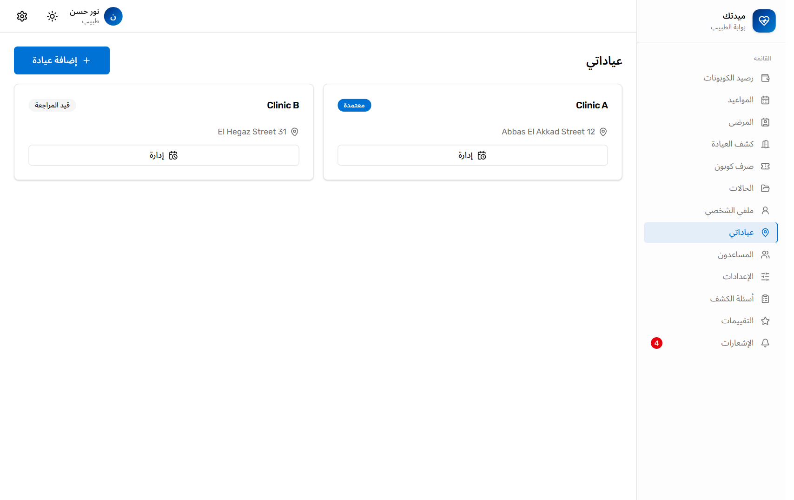
- 1إضافة عيادة — تراجع ميدتك العيادة الجديدة قبل أن يتمكن المرضى من الحجز فيها.
- 2لكل عيادة بطاقة، اضغط عليها أو على إدارة لفتحها.
- 3معتمدة — يستطيع المرضى الحجز في هذه العيادة.
- 4قيد المراجعة — لم تعتمدها ميدتك بعد.
- 5إدارة يفتح بيانات العيادة ومواعيدها.
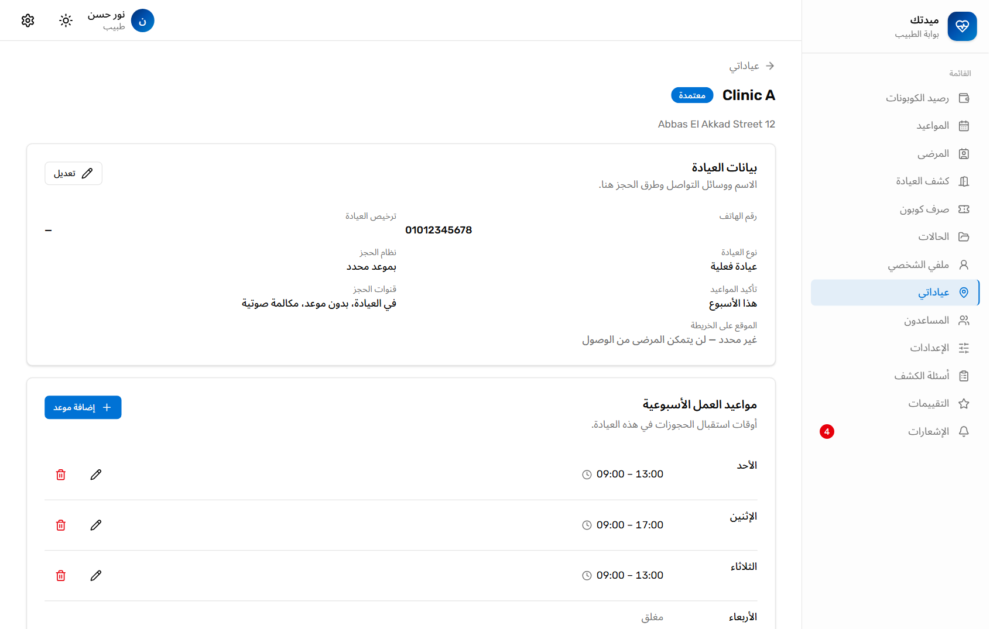
- 1تعديل لتغيير الاسم والهاتف والعنوان وطرق الحجز في العيادة.
- 2إضافة موعد لإضافة مواعيد عمل.
- 3القلم يعدّل مواعيد يوم واحد، وسلة المهملات بجانبه تحذفها.
- 4مغلق — لا مواعيد عمل في هذا اليوم.
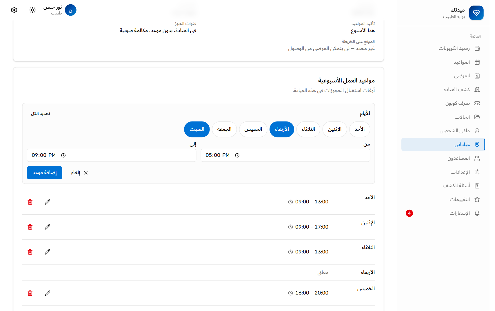
- 1الأيام — اضغط على كل يوم تنطبق عليه هذه المواعيد.
- 2تحديد الكل يختار الأسبوع كله.
- 3من — وقت البدء.
- 4إلى — وقت الانتهاء.
- 5إضافة موعد يحفظها. وإذا تداخلت المواعيد مع فترة أخرى في اليوم نفسه تُرفض مع رسالة توضح السبب.
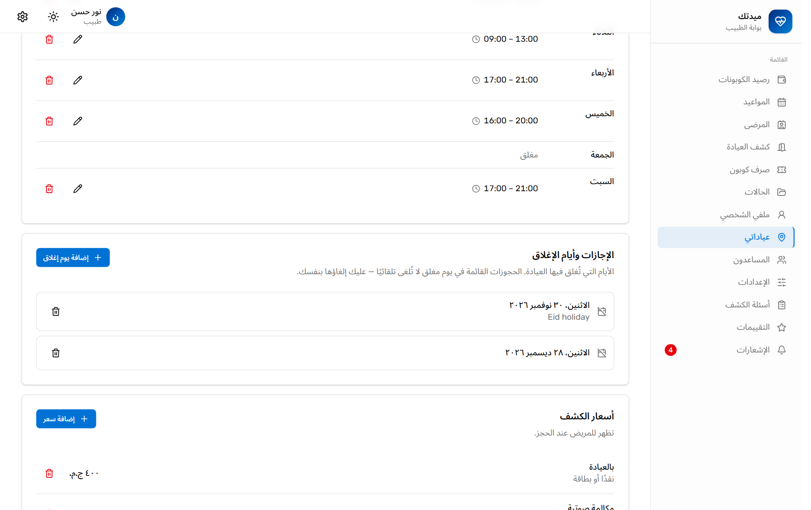
- 1الإجازات وأيام الإغلاق — الأيام التي تُغلق فيها العيادة.
- 2إضافة يوم إغلاق — اختر التاريخ، والسبب إن أردت.
- 3أسعار الكشف — تظهر للمرضى عند الحجز.
- 4إضافة سعر — نوع الكشف والمبلغ وطريقة الدفع المقبولة.
وفي أسفل الصفحة يوقف زر حذف العيادة الحجوزات الجديدة، ولا يتم الحذف إذا كانت بالعيادة مواعيد قادمة. أما تغيير ترخيص العيادة فيتم بطلب تعديل من ملفك الشخصي.
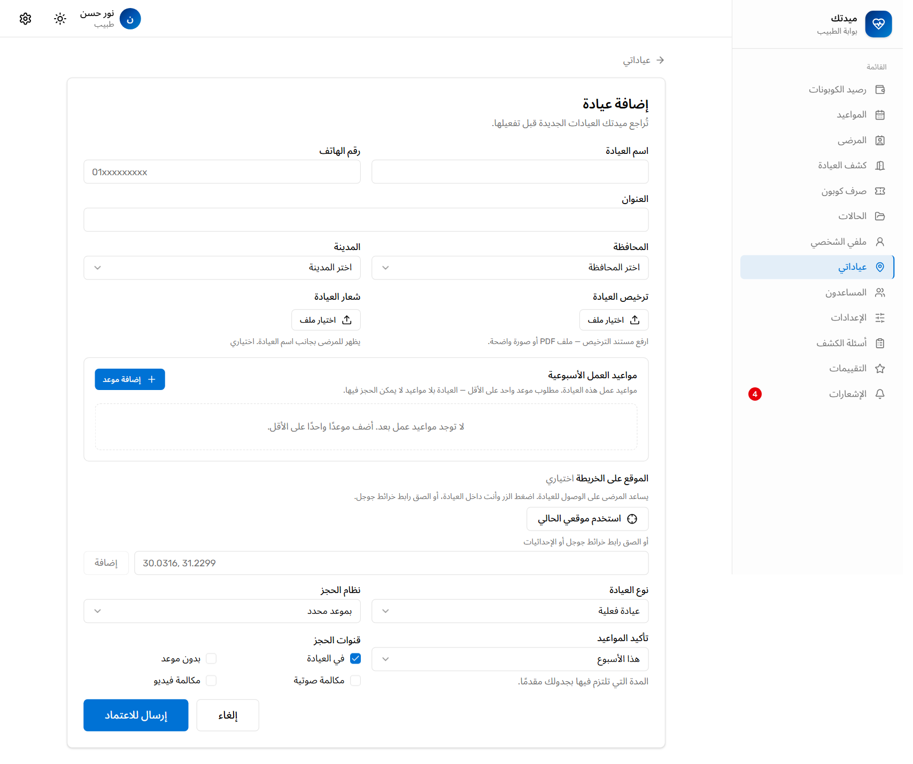
- 1اسم العيادة ورقم الهاتف والعنوان.
- 2المحافظة ثم المدينة.
- 3ترخيص العيادة — ارفع مستند الترخيص، وهو مطلوب. أما شعار العيادة فاختياري.
- 4إضافة موعد — يلزم موعد عمل واحد على الأقل.
- 5الموقع على الخريطة (اختياري) — اضغط استخدم موقعي الحالي وأنت في العيادة، أو الصق رابط خرائط جوجل.
- 6إرسال للاعتماد يرسل العيادة إلى ميدتك.
أسئلة الكشف
يجيب المرضى عن هذه الأسئلة عند الحجز، وتظهر إجاباتهم في الموعد تحت بيانات المريض.
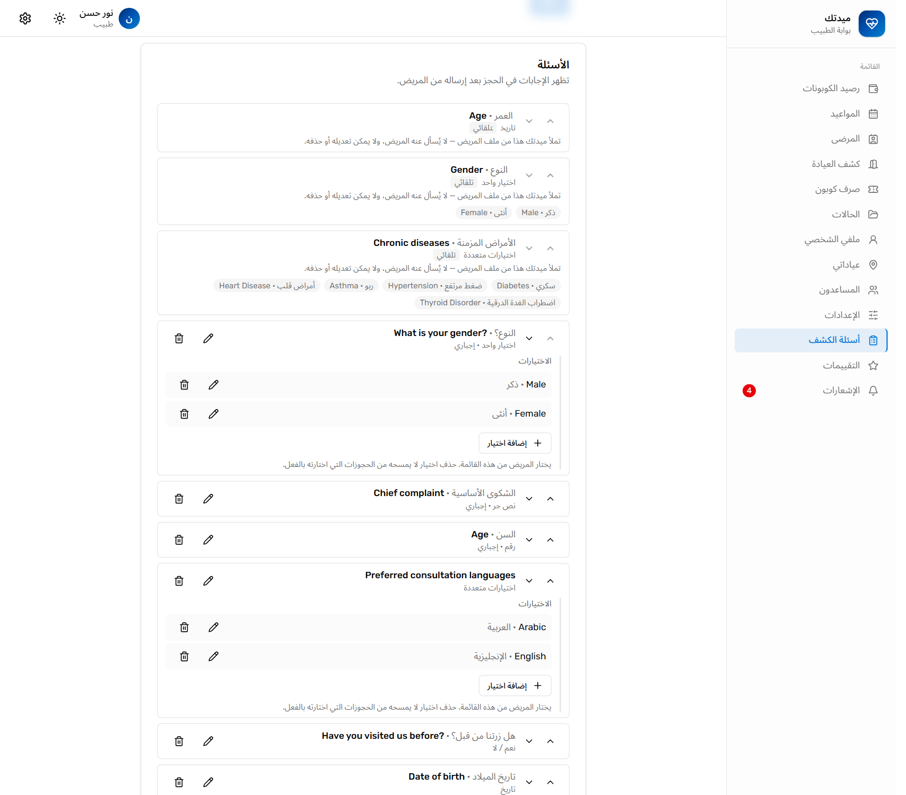
- 1الأسئلة — القائمة بالترتيب الذي يراه المريض.
- 2تلقائي — تملأ ميدتك هذه البيانات من ملف المريض (السن والنوع والأمراض المزمنة)، فلا يُسأل عنها المريض ولا يمكنك تعديلها.
- 3الأسهم تنقل السؤال لأعلى أو لأسفل، والقلم يعدّله، وسلة المهملات تحذفه.
- 4إضافة اختيار يضيف إجابة إلى سؤال الاختيارات.
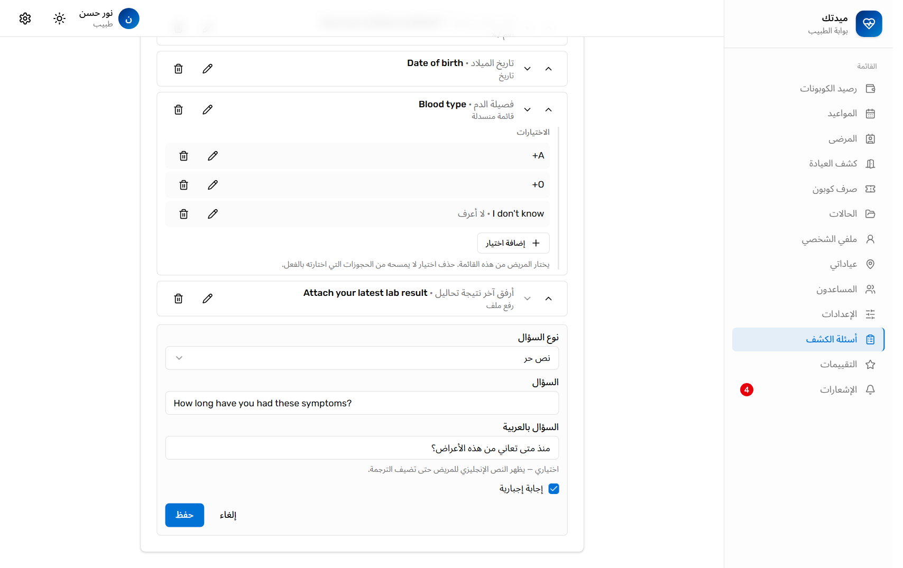
- 1نوع السؤال — نص حر أو رقم أو نعم / لا أو تاريخ أو اختيار واحد أو اختيارات متعددة أو قائمة منسدلة أو رفع ملف.
- 2السؤال — بالإنجليزية.
- 3السؤال بالعربية — اختياري، ويظهر النص الإنجليزي للمريض حتى تضيف الترجمة.
- 4إجابة إجبارية تجعل السؤال مطلوبًا.
- 5حفظ. وفي أسئلة الاختيارات أضف الاختيارات بعد حفظ السؤال.
الإعدادات
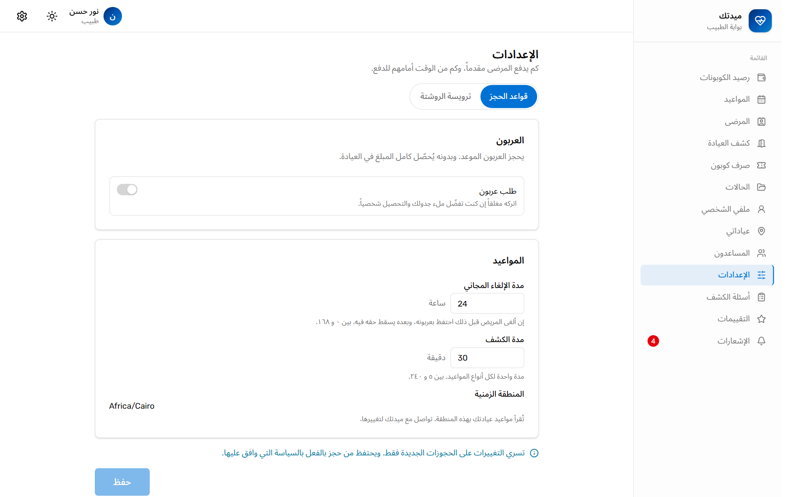
- 1قواعد الحجز وترويسة الروشتة هما التبويبان.
- 2طلب عربون — العربون يحجز الموعد. وعند تفعيله تحدد أيضًا قيمة العربون ومهلة الدفع.
- 3مدة الإلغاء المجاني — إذا ألغى المريض قبل هذه المدة احتفظ بعربونه.
- 4مدة الكشف — مدة واحدة لكل أنواع المواعيد.
- 5المنطقة الزمنية — تُقرأ مواعيد عيادتك بها، وتواصل مع ميدتك لتغييرها.
- 6حفظ.
تسري التغييرات على الحجوزات الجديدة فقط، ويحتفظ من حجز بالفعل بالسياسة التي وافق عليها.
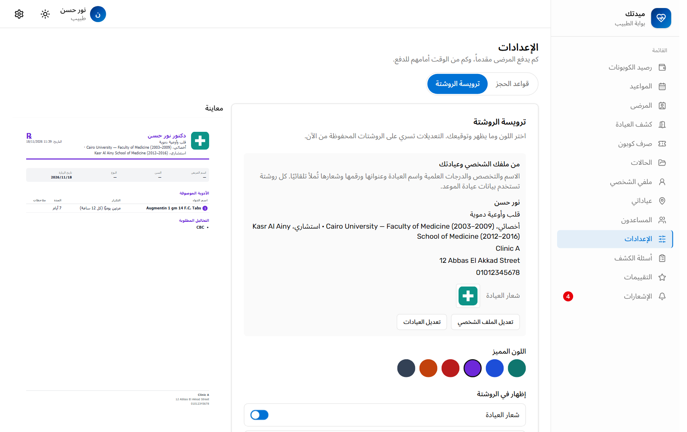
- 1من ملفك الشخصي وعيادتك — الاسم والتخصص والدرجات العلمية واسم العيادة وعنوانها ورقمها وشعارها تُملأ تلقائيًا، وكل روشتة تستخدم بيانات عيادة الموعد.
- 2تعديل الملف الشخصي وتعديل العيادات — لتغيير هذه البيانات من مصدرها.
- 3اللون المميز — لون الترويسة.
- 4إظهار في الروشتة — فعّل كل عنصر أو أوقفه.
- 5تعرض المعاينة النتيجة.
لتوقيع روشتاتك فعّل التوقيع تحت إظهار في الروشتة، ثم ارفع صورة توقيعك أو اضغط ارسم توقيعك. اضغط بعدها حفظ الترويسة. تسري التغييرات على الروشتات التي تُحفظ من الآن.
ملفي الشخصي
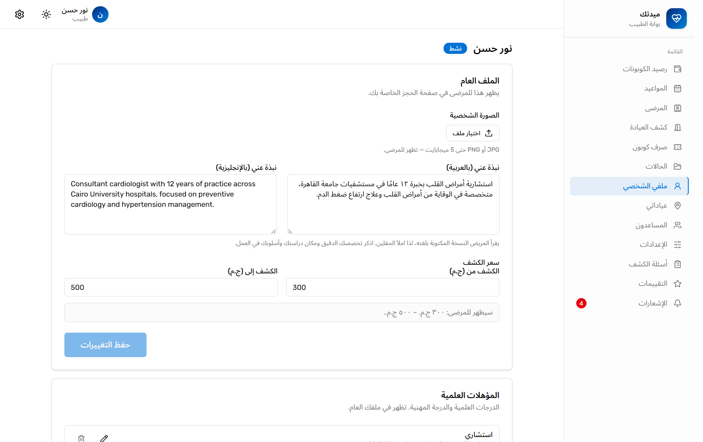
- 1اسمك وحالة حسابك.
- 2الصورة الشخصية — JPG أو PNG حتى 5 ميجابايت، وتظهر للمرضى.
- 3نبذة عني — املأ النسختين العربية والإنجليزية، فكل مريض يقرأ بلغته.
- 4سعر الكشف — نطاق من وإلى يظهر للمرضى، واتركه فارغًا لإخفائه.
- 5حفظ التغييرات.
وفي الأسفل: المؤهلات العلمية والخبرات (أضف أي سطر أو عدّله أو احذفه)، ومستندات التوثيق — ارفع البطاقة الشخصية وكارنيه النقابة وترخيص مزاولة المهنة وشهادة المؤهل لتراجعها ميدتك.
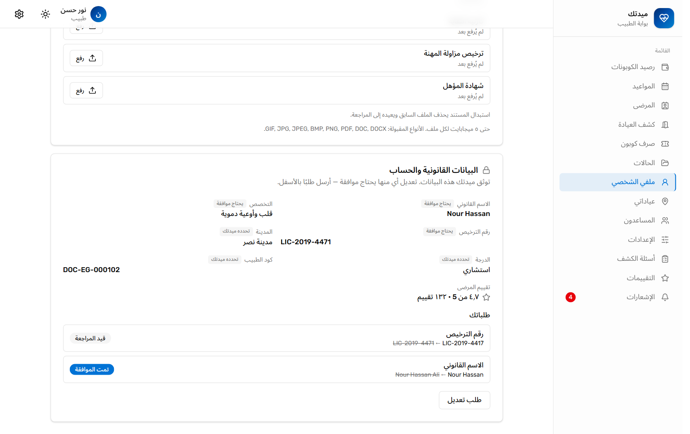
- 1البيانات القانونية والحساب — توثقها ميدتك.
- 2يحتاج موافقة — يمكنك طلب تعديله.
- 3تحدده ميدتك — لا يغيّره إلا فريق ميدتك.
- 4طلباتك — التعديلات التي طلبتها وحالة كل منها (قيد المراجعة أو تمت الموافقة).
- 5طلب تعديل — اختر البيان، وأدخل القيمة الصحيحة أو اخترها، ثم اضغط إرسال الطلب. تبقى بياناتك الحالية كما هي حتى توافق ميدتك.
الإشعارات
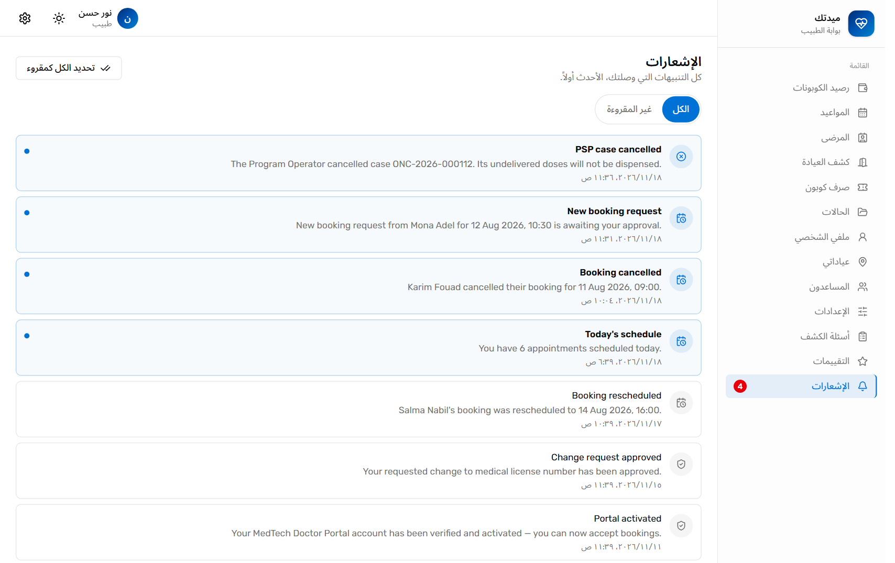
- 1الكل — كل التنبيهات، الأحدث أولًا.
- 2غير المقروءة — ما لم تفتحه بعد فقط.
- 3تحديد الكل كمقروء يزيل علامات غير المقروء.
تصلك تنبيهات مثلًا عن طلبات الحجز الجديدة والإلغاءات وتغيير المواعيد وجدول اليوم وطلبات التعديل المقبولة وتغيّرات حالات برامج الدعم.
برامج دعم المرضى: أماكنك
يمنحك برنامج الدعم عددًا من أماكن المرضى، وتسجيل كل مريض يصرف مكانًا واحدًا.
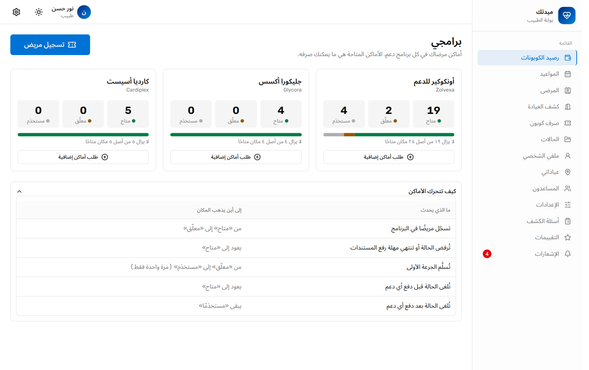
- 1بطاقة لكل برنامج، واسم الدواء تحت اسم البرنامج.
- 2متاح — الأماكن التي ما زال بإمكانك صرفها.
- 3معلّق — مرضى مسجّلون لم يستلموا الجرعة الأولى بعد.
- 4مستخدَم — مرضى استلموا الجرعة الأولى.
- 5طلب أماكن إضافية — اطلب من البرنامج أماكن أخرى.
- 6كيف تتحرك الأماكن — افتحه لترى القواعد.
- 7تسجيل مريض يبدأ تسجيلًا جديدًا.
| ما الذي يحدث | إلى أين يذهب المكان |
|---|---|
| تسجّل مريضًا في البرنامج | من «متاح» إلى «معلّق» |
| تُرفض الحالة أو تنتهي مهلة رفع المستندات | يعود إلى «متاح» |
| تُسلَّم الجرعة الأولى | من «معلّق» إلى «مستخدَم» (مرة واحدة فقط) |
| تُلغى الحالة قبل دفع أي دعم | يعود إلى «متاح» |
| تُلغى الحالة بعد دفع أي دعم | يبقى «مستخدَمًا» |
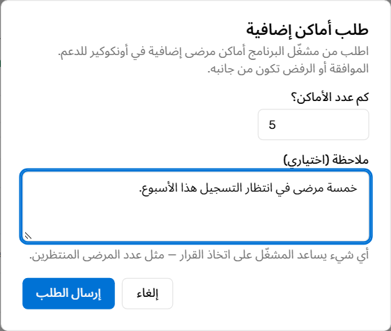
- 1طلب أماكن إضافية — يوافق مشغّل البرنامج على الطلب أو يرفضه.
- 2كم عدد الأماكن؟ — ما بين مكان واحد و100 مكان.
- 3ملاحظة (اختياري) — مثل عدد المرضى المنتظرين.
- 4إرسال الطلب.
تسجيل مريض حضر إلى العيادة
استخدم هذه الطريقة للمريض الموجود أمامك وليس لديه حساب في تطبيق ميدتك بعد. افتح صرف كوبون (أو تسجيل مريض من صفحة الرصيد).
١. اختر طريقة التسجيل والبرنامج
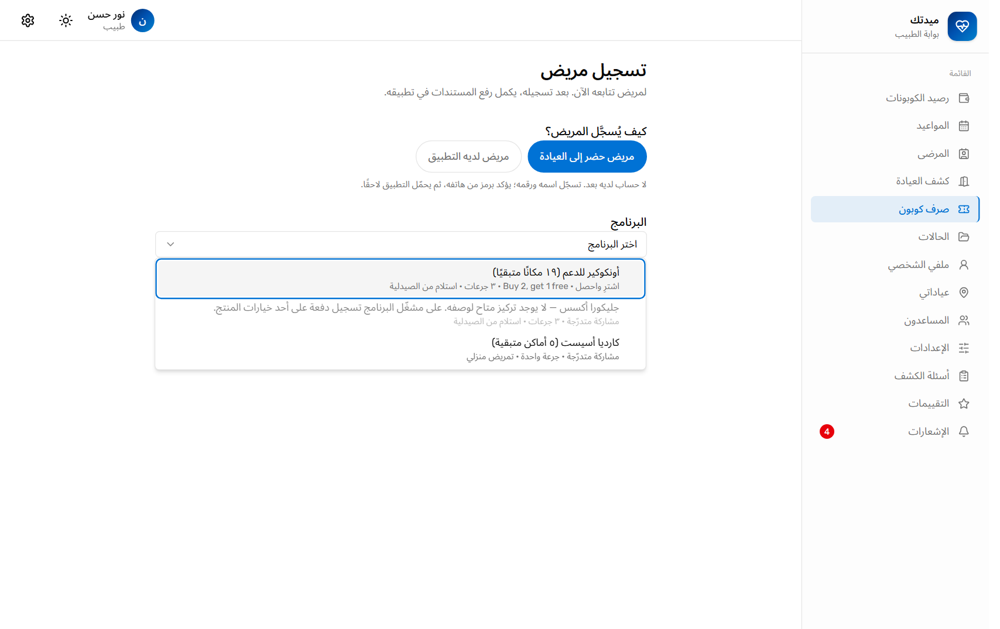
- 1مريض حضر إلى العيادة — لا حساب لديه في ميدتك بعد.
- 2مريض لديه التطبيق — انظر الجزء التالي.
- 3يعرض كل برنامج عدد الأماكن المتبقية لك، وتفاصيله (نظام الدفع والعرض وعدد الجرعات وطريقة تسليم الدواء).
- 4البرنامج الذي لا يمكنك استخدامه حاليًا يظهر باهتًا ومعه السبب.
٢. تأكد من هوية المريض
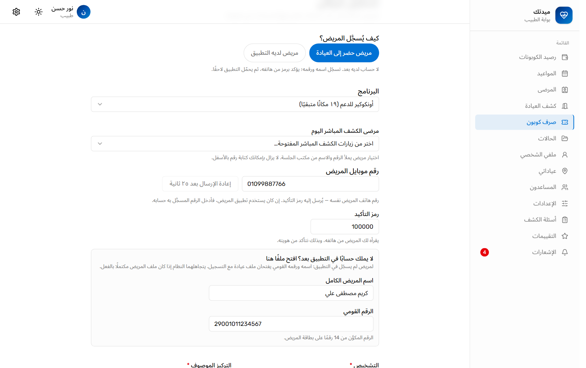
- 1مرضى الكشف المباشر اليوم — اختر المريض من قائمة كشف العيادة لليوم ليُملأ رقمه واسمه تلقائيًا. هذه الخطوة اختيارية.
- 2رقم موبايل المريض — رقم المريض نفسه، وإليه يُرسل رمز التأكيد. وإذا كان المريض يستخدم التطبيق فأدخل الرقم المسجَّل به حسابه. ثم اضغط إرسال الرمز.
- 3يمكن إعادة إرسال الرمز بعد انتهاء العد التنازلي.
- 4رمز التأكيد — يقرأ لك المريض الرمز المكوّن من 6 أرقام من هاتفه.
- 5اسم المريض الكامل.
- 6الرقم القومي — اكتب الأرقام الأربعة عشر المطبوعة على بطاقة المريض.
يفتح مربع لا يملك حسابًا في التطبيق بعد؟ افتح ملفًا هنا ملفًا لمريض لم يسجّل في التطبيق، ويتجاهله النظام إذا كان ملف المريض مكتملًا بالفعل.
٣. املأ نموذج التسجيل
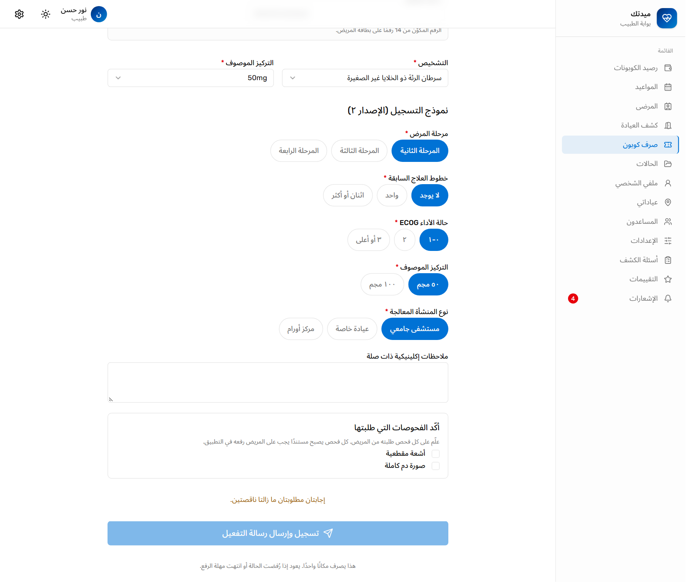
- 1التشخيص — اختره من قائمة البرنامج.
- 2التركيز الموصوف.
- 3اضغط على إجابة واحدة لكل سؤال، والنجمة الحمراء تعني أن السؤال مطلوب.
- 4أكّد الفحوصات التي طلبتها — علّم على كل فحص، فكل فحص يصبح مستندًا يرفعه المريض في التطبيق.
- 5ما زال ناقصًا، ويبقى الزر باهتًا حتى يكتمل كل شيء.
- 6تسجيل وإرسال رسالة التفعيل.
٤. تم التسجيل
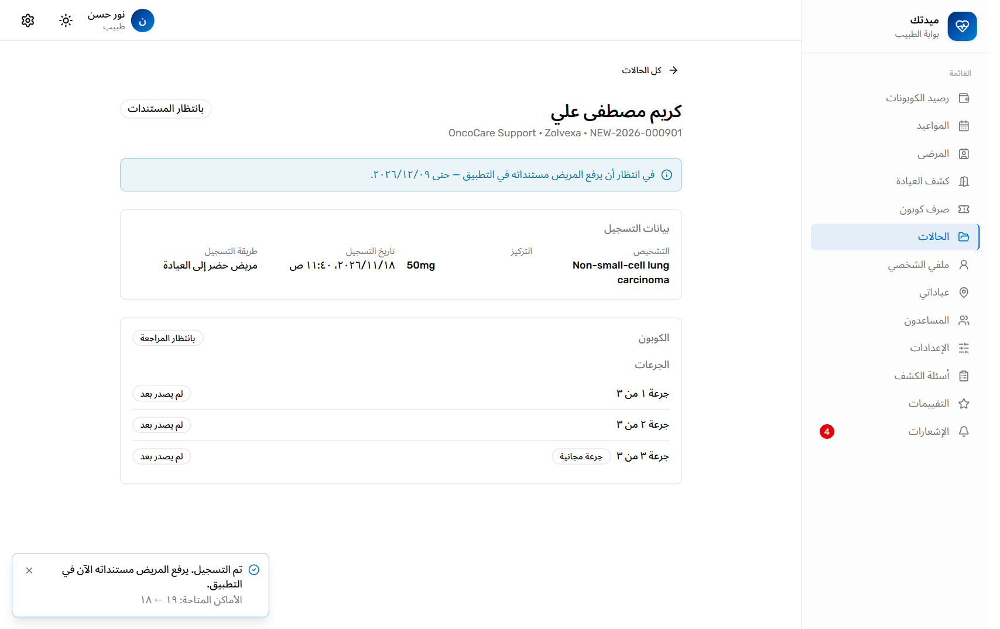
- 1تُفتح حالة المريض.
- 2رقم مرجع الحالة.
- 3بانتظار المستندات — يرفع المريض الآن مستنداته في التطبيق.
- 4آخر موعد لرفع المستندات.
- 5رسالة التأكيد، ومعها عدد أماكنك المتاحة قبل التسجيل وبعده.
تسجيل مريض لديه التطبيق
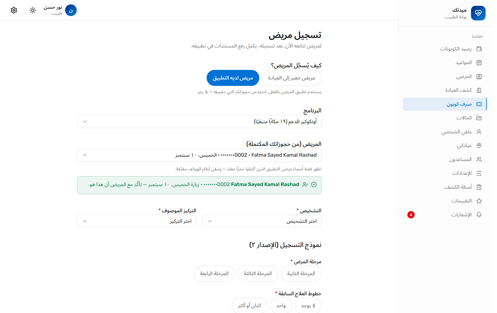
- 1مريض لديه التطبيق.
- 2البرنامج.
- 3المريض (من حجوزاتك المكتملة) — لا تظهر إلا أسماء المرضى الذين لديهم حساب في التطبيق وحضروا حجزًا معك، وتبقى أرقام هواتفهم مخفية.
- 4تأكّد من الاسم مع المريض الموجود في الغرفة، ولا حاجة إلى رمز.
ثم املأ النموذج واضغط تسجيل وإرسال رسالة التفعيل كما سبق.
التسجيل من داخل الموعد
بعد تسجيل حضور المريض يظهر في الموعد زر التسجيل في برنامج دعم.
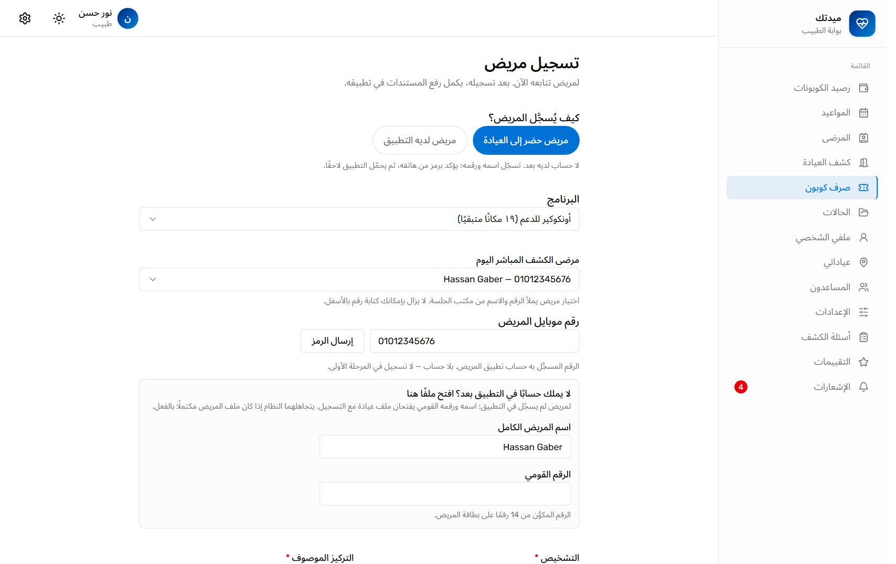
- 1يكون البرنامج محددًا مسبقًا إذا كان الحجز مرتبطًا ببرنامج.
- 2مريض كشف العيادة محدد مسبقًا…
- 3…ومعه رقم موبايله…
- 4…فتضغط إرسال الرمز وتُدخل الرمز الذي يقرؤه المريض.
- 5اسمه مكتوب بالفعل.
- 6اكتب الرقم القومي من البطاقة.
وعند التسجيل من موعد لمريض لديه التطبيق وهو داخل الكشف، يكون المريض محددًا ولا يمكن تغييره (وكذلك البرنامج إذا كان الحجز تابعًا لبرنامج).
حالاتك
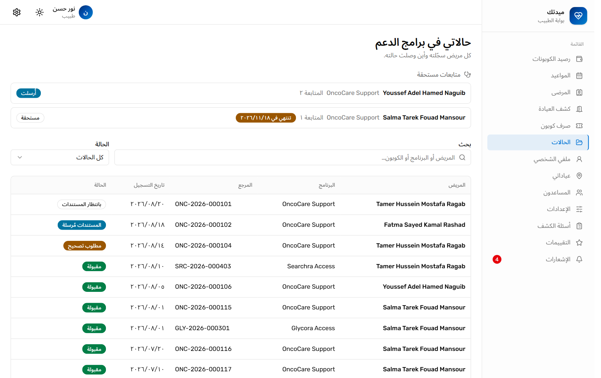
- 1متابعات مستحقة — حالات تنتظر نموذج المتابعة منك.
- 2مستحقة — أرسلها قبل التاريخ الظاهر. أما أُرسلت فتعني أنها بانتظار المراجعة.
- 3بحث باسم المريض أو البرنامج أو الكوبون.
- 4الحالة — اعرض مرحلة واحدة فقط.
- 5مرحلة كل حالة. اضغط على الصف لفتح الحالة.
| المرحلة | المعنى |
|---|---|
| بانتظار المستندات | ما زال على المريض رفع مستنداته في التطبيق. |
| المستندات مُرسلة | سيراجعها فريق البرنامج. |
| قيد المراجعة | يراجع فريق البرنامج الحالة. |
| مطلوب تصحيح | على المريض تصحيح شيء في التطبيق. |
| مقبولة | الكوبون سارٍ، ويستلم المريض كل جرعة في موعدها. |
| مرفوضة | الرفض نهائي. لإعادة المحاولة سجّل المريض من جديد، فتبدأ حالة جديدة. |
| أُغلقت — انتهت مهلة الرفع | لم يرفع المريض مستنداته في الوقت المحدد، وعاد المكان إليك. |
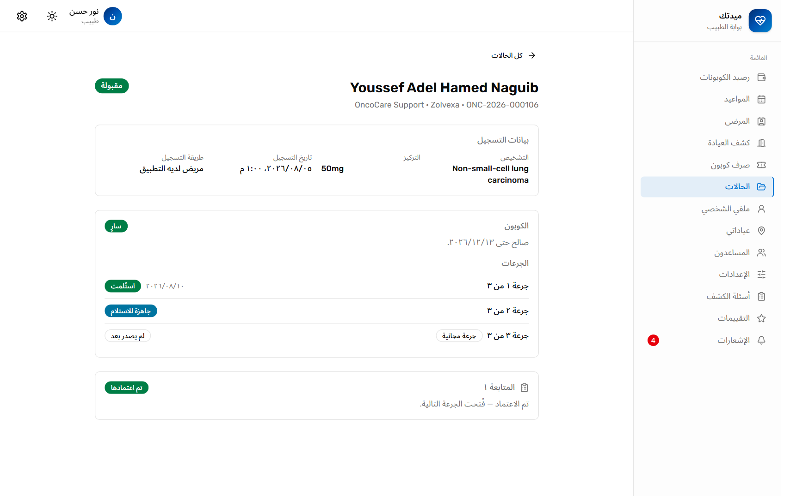
- 1المريض ورقم مرجع الحالة والبرنامج والدواء.
- 2بيانات التسجيل — التشخيص والتركيز وتاريخ التسجيل وطريقة التسجيل.
- 3الكوبون — حالته وآخر يوم لصلاحيته.
- 4الجرعات — كل جرعة وما وصلت إليه، مثل استُلمت أو جاهزة للاستلام أو لم يصدر بعد. وتميّز علامة جرعة مجانية الجرعة التي لا يدفع المريض ثمنها.
- 5المتابعة ونتيجتها.
صفحة الحالة للاطلاع فقط، أما مراجعة الحالة والموافقة عليها فمن مهام فريق البرنامج.
إرسال متابعة
افتح المتابعة المستحقة من متابعات مستحقة، ثم اضغط إرسال المتابعة.
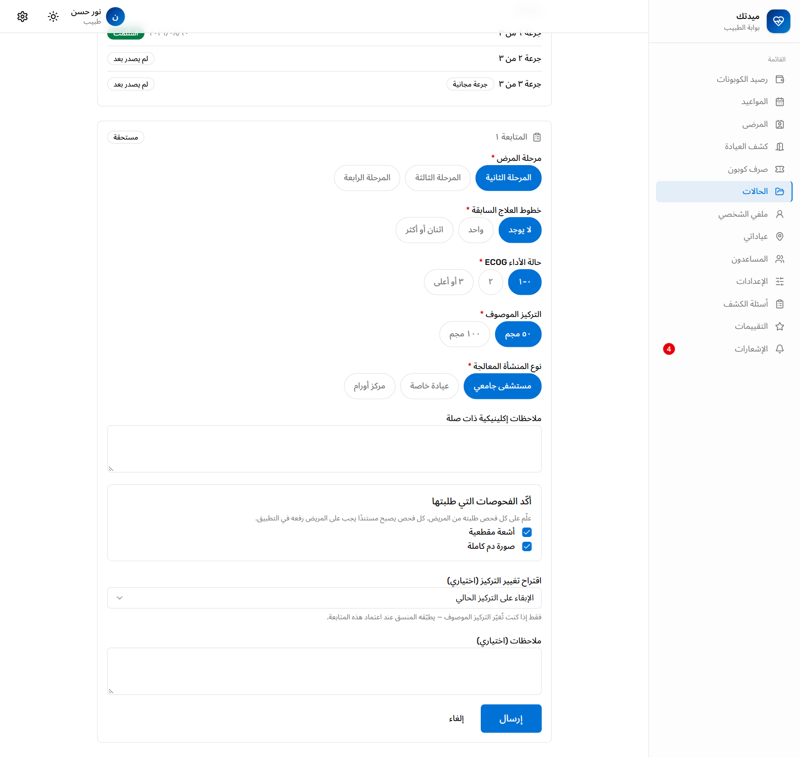
- 1المتابعة ١ — رقم المتابعة.
- 2أجب عن الأسئلة كما في نموذج التسجيل، وعلّم على الفحوصات.
- 3اقتراح تغيير التركيز (اختياري) — فقط إذا غيّرت التركيز الموصوف، ويطبّقه المنسق عند اعتماد المتابعة.
- 4إرسال. يراجع المنسق المتابعة قبل فتح الجرعة التالية.
المساعدون
يساعدك المساعد في إدارة إحدى عياداتك. وإضافة المساعد أو تعديله أو إزالته من صلاحيات الطبيب وحده.
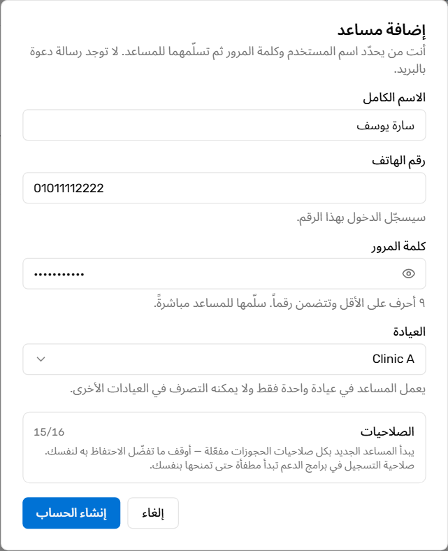
- 1الاسم الكامل.
- 2رقم الهاتف — يسجّل المساعد الدخول به.
- 3كلمة المرور — ٩ أحرف على الأقل وتتضمن رقمًا. سلّمها للمساعد بنفسك، فلا تُرسل أي رسالة دعوة.
- 4العيادة — يعمل المساعد في عيادة واحدة فقط.
- 5الصلاحيات — اضغط عليها لفتح قائمة المفاتيح.
يبدأ المساعد الجديد بكل صلاحيات الحجوزات مفعّلة، وبصلاحية التسجيل في البرامج مطفأة. اضغط إنشاء الحساب فيظهر المساعد في القائمة.
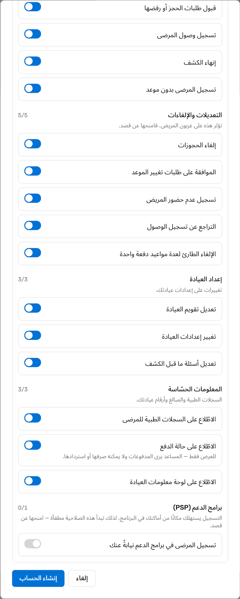
- 1اسم المساعد ورقم هاتفه، ونشط تعني أنه يستطيع تسجيل الدخول.
- 2العيادة التي يعمل بها.
- 3الصلاحيات — اضغط عليها لفتح المفاتيح أو إغلاقها، والعدد يبيّن كم منها مفعّل.
- 4كل مجموعة نوع من العمل: الاستقبال والتعديلات والإلغاءات وإعداد العيادة والمعلومات الحسّاسة وبرامج الدعم (PSP). والمدفوعات للعرض فقط دائمًا بالنسبة للمساعد.
- 5تسجيل المرضى في برامج الدعم نيابةً عنك يبدأ مطفأً لأن التسجيل يصرف من أماكنك، ففعّله فقط إذا أردت أن يسجّل هذا المساعد المرضى.
- 6حفظ يطبّق تغييراتك، وإلغاء يتراجع عنها.
- 7سلة المهملات تزيل المساعد، فيفقد صلاحية الدخول فورًا.
ما يستطيعه المساعد وما لا يستطيعه
| المهمة | المساعد |
|---|---|
| قبول طلبات الحجز أو رفضها | فقط بصلاحية قبول طلبات الحجز أو رفضها |
| تسجيل حضور المرضى | فقط بصلاحية تسجيل وصول المرضى |
| بدء الكشف وإنهاؤه | فقط بصلاحية إنهاء الكشف |
| الإلغاء وتسجيل عدم الحضور والإلغاء الطارئ | فقط بالمفتاح المقابل في التعديلات والإلغاءات |
| إدارة قائمة كشف العيادة | فقط بصلاحية تسجيل المرضى بدون موعد |
| تغيير قواعد الحجز | فقط بصلاحية تغيير إعدادات العيادة، وإلا فللاطلاع فقط |
| رؤية إجابات المرضى وسجلاتهم الطبية | فقط بصلاحية الاطّلاع على السجلات الطبية للمرضى |
| رؤية المدفوعات | فقط بصلاحية الاطّلاع على حالة الدفع، ولا يمكنه الاسترداد أبدًا |
| تسجيل مريض في برنامج دعم أو طلب أماكن إضافية | فقط بصلاحية تسجيل المرضى في برامج الدعم نيابةً عنك |
| كتابة الروشتة أو تعديلها | أبدًا — للطبيب وحده |
| تغيير ترويسة الروشتة | أبدًا |
| إدارة المساعدين | أبدًا |
وتعمل بقية المفاتيح (تقويم العيادة وأسئلة الكشف وطلبات تغيير الموعد والتراجع عن تسجيل الوصول ولوحة معلومات العيادة) بالطريقة نفسها: لا يستطيع المساعد إلا ما تفعّله له.
وهذا ما يراه المساعد عندما لا يملك بعض الصلاحيات:
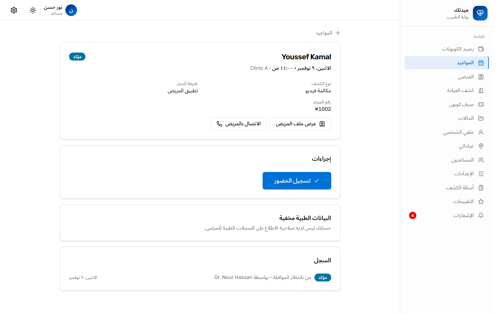
- 1يظهر في الشريط العلوي مساعد.
- 2لا تظهر إلا الأزرار المسموح بها للمساعد، وهنا تسجيل الحضور.
- 3البيانات الطبية مخفية — لا يحق لهذا المساعد رؤية السجلات الطبية، ولا تظهر المدفوعات أيضًا.
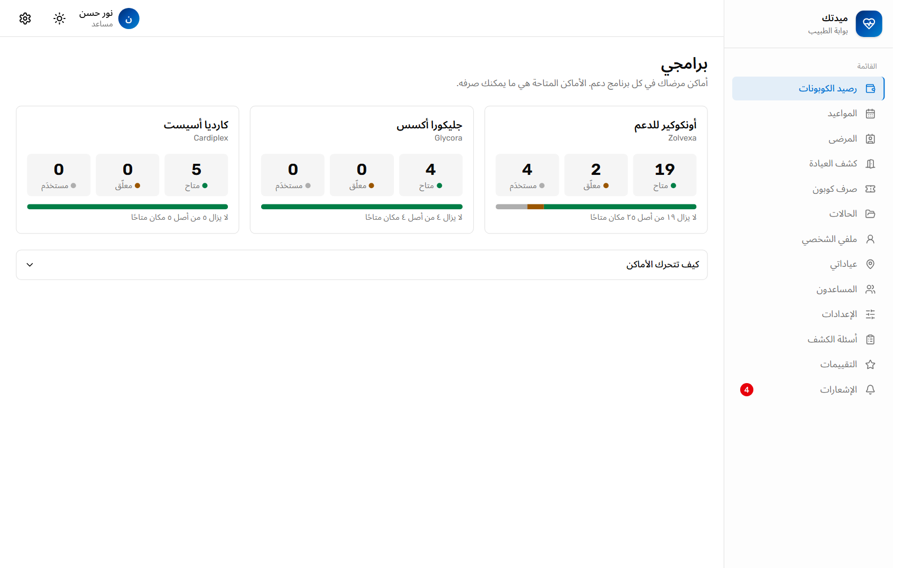
- 1تظهر بطاقات البرامج…
- 2…والعدّادات، ولكن بلا زر تسجيل مريض ولا طلب أماكن إضافية.
- 3تفتح صرف كوبون رسالة تُخبر المساعد بأن الطبيب لم يفعّل له هذه الصلاحية.
إجابات سريعة
أغلقت الصفحة في منتصف نموذج. لم يُحفظ شيء، فابدأ من جديد.
لا أستطيع تسجيل مريض — لا أماكن متبقية. استخدم طلب أماكن إضافية في رصيد الكوبونات.
لم يصل الرمز إلى المريض. راجع رقم الموبايل، وانتظر انتهاء العد التنازلي، ثم اضغط إرسال مرة أخرى.
عيادتي الجديدة لا تظهر للمرضى. يجب أن تكون معتمدة من ميدتك، وأن تكون لها مواعيد عمل.
المساعد لا يرى أحد الأزرار. افتح المساعدون، ثم الصلاحيات الخاصة به، وفعّل المهمة واضغط حفظ.
من أين أطبع الروشتة؟ احفظها، ثم اضغط فتح ملف PDF واطبع منه.